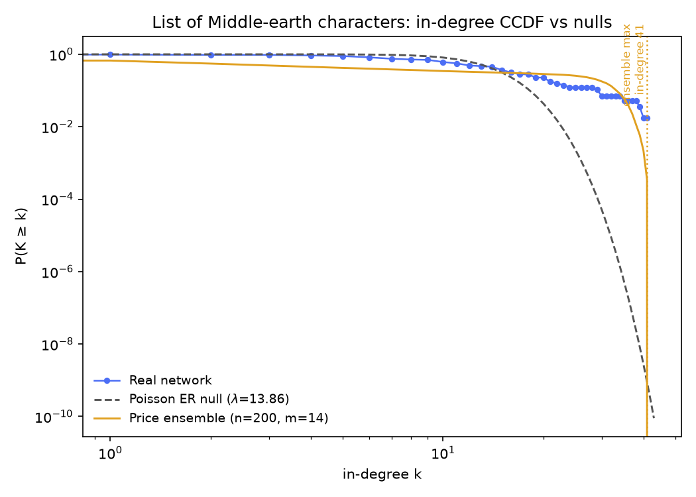
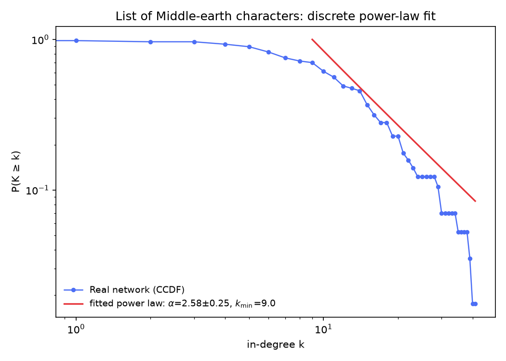

The hub that isn't a person
Running the Week 2 test suite on the 57 pages of the List of Middle-earth characters — and the network's biggest in-degree winner is a category page. The null models have opinions about that.
Running the Week 2 test suite on the 57 pages of the List of Middle-earth characters — and the network's biggest in-degree winner is a category page. The null models have opinions about that.
Fourth dataset, same four tests. Its source isn't a Wikipedia category: we seeded
List_of_Middle-earth_characters, the wiki's own index page, and took the 57
distinct pages reachable from it after resolving redirects (crawled 2026-09-10). That seed
choice has a consequence the rest of the page keeps meeting: the "node set" contains a few
metadata pages alongside actual character articles. With 790 directed edges between
them (an edge A→B when B's article appears on A's), this is our densest small dataset:
mean in- and out-degree 13.9, no isolates, a single weakly connected component of all 57 nodes.
The in-degree ranking makes the problem plain: Elves in Middle-earth — itself a list-page, not a person — leads with 41 citations; Sauron 39; Aragorn 38; Gandalf 34; Elrond 29. Minimum degree 0 means someone is cited by nobody, and the in-degree maximum is nearly 3× the mean. So the Week 2 question splits in two: is the real structure distinctive, and how much of the headline hub is even a character? Same order as before: chance, degree-preserving chance, growth, and the individual level.
Erdős–Rényi with the same 57 nodes and 790 edges. Across 300 offline draws the biggest hub's in-degree ranged 18–27 (mean 21.4, sd 1.6). The real max is 41 — roughly 12 standard deviations above the random mean and 52% beyond the most extreme of 300 draws. Sauron's 39 and Aragorn's 38 also clear the ER ceiling; even Gandalf's 34 does.
One visible complication: the "Elves in Middle-earth" hub is partly an artifact (every character page listing its elves links to it), so some share of the distinction belongs to Wikipedia's structure rather than Middle-earth's story. But the same caution applies in reverse: four of the top five are genuine characters, and all four beat chance by well over 7 standard deviations. Draw your own random network below — its biggest hub will never come close.
Each draw independently places 790 directed edges among 57 nodes at random (no self-loops, no repeats) and plots the resulting in-degree CCDF against the real network's.
Degree-preserving directed shuffle throughout: chains a→b, b→c, c→d rewired to a→c, c→b, b→d with every node keeping its exact in- and out-degree. On the undirected projection (an edge if either article links to the other; 550 undirected edges here):
Offline, 300 shuffle realizations (3,000 swaps each). This is the first dataset where both statistics are distinctive. Clustering: null mean 0.5623 (sd 0.0103) vs. real 0.5984 — z ≈ 3.5, beyond every shuffle (p ≈ 0). Holding everyone's link counts fixed and re-dealing them lowers the triangle rate: some of Middle-earth's clique structure isn't explained by degree at all, and a likely suspect is the artifact page again — "Elves in Middle-earth" links to a huge part of the network, while a different shuffle gives its 57-in-degree to scattered mid-degree nodes who form fewer triangles. The honest statement: the clustering signal is real, but some of it is one unusual node's link count being helped by a hub whose out-links co-reference each other.
Reciprocity is bigger: null mean 0.3394 (sd 0.0165) vs. real 0.6076 — z ≈ 16.2, beyond all 300 shuffles (p ≈ 0). Sixty percent of Middle-earth links run both ways against a degree-only 34% — the second-largest reciprocity gap per sd we've seen behind only Westeros's.
Run the same test yourself: pick a statistic, run some shuffles, and watch the null build up.
Each shuffle is a fresh copy of the real network, degree-preserving-swapped from scratch — not a running chain — matching how the offline reference numbers above were produced (with fewer swaps per realization here, for responsiveness).
One thing no shuffle can address: the component partition. All 300 realizations left the giant component at exactly 57 nodes (sd 0), by construction — because a degree-preserving swap rewires only along an existing chain a→b→c→d and such a chain can never cross between weakly connected components. The network has a single component, so this is a fact about the method, not a discovery about Middle-earth — so no histogram above, on purpose.
Directed preferential attachment, Price model, unchanged from the Silmarillion page: each new node joins with m outgoing links chosen with probability proportional to the target's current in-degree. Mean out-degree is 13.9, so we ran trials at m = 13, 14 and 15 (50 each).
Price(m=13) trials reached max in-degree 35–43 (mean 38.2), Price(m=14) 35–41 (mean 37.6), Price(m=15) 33–40 (mean 37.3) — the real top of 41 fits inside that spread without tuning at m = 13–14. This is the hub closest to a comfortable Price-model fit we've measured on the smaller datasets: the growth model neither overshoots (Marvel, Street Fighter) nor scrapes under (Silmarillion, DS9). But remember the artifact: a hub of 41 in a 57-node network would have to be generated by a model whose world is this list page's link pattern — a genuinely pleasing consistency for the Price hypothesis, and a genuine worry for anyone reading the number as a character-level claim.
Move the slider and regenerate to see for yourself.
Grows a fresh directed preferential-attachment network to n=57 nodes with the chosen m, then plots its in-degree CCDF against the real network's.
Preferential attachment depends on history: characters arrive one at a time, and each newcomer is more likely to connect to whoever's already popular, so an early lead can snowball into a hub like "Elves in Middle-earth." But what if this corner of Middle-earth was born all at once?
If all 57 pages existed simultaneously, there'd be no established popularity for a newcomer to follow — everyone would start with the same shot at new connections. That's the counterfactual below: a second model, the same 57 pages and roughly the same edge budget (m = 14 wires about 798 edges against the real 790), that links nodes uniformly at random instead of preferring the well-connected. It's not a claim about how the Middle-earth article network actually came to exist — it's a way of asking how much of the list page's 41-link hub could come from history alone.
Sequential growth adds one page at a time, wiring each newcomer's m links proportional to how connected existing pages already are (the same rule as above). Big Bang creates all 57 at once and wires the same m links per page uniformly at random — no regard for who's already connected. Switch models or click "New universe" for a fresh run; node size shows degree, and the largest hub is highlighted in gold. Hover a node (mouse only) for its name and degree.
Hover a node to see who occupies it and how connected it is in this run.
Run each model a few times at the same m. Big Bang spreads connections fairly evenly — across 200 offline runs its biggest hub ranged 19–26 (mean 21.8), right where the ER draws land and nowhere near the real 41. Sequential growth at the same m lands higher and tighter (35–41, mean 37.6), bracketing the list page's real hub. The gap between the two models is the point: the same link budget, spent without preference, produces a hub barely half the real one — so whatever built "Elves in Middle-earth," it behaved like a node that other pages kept preferring, not like a lucky draw.
Which is the uncomfortable part: the mechanism that reproduces the artifact hub best is precisely rich-get-richer growth acting on Wikipedia's structure (every elf's article links the list page), not on any character's fame. The model doesn't know the hub is metadata — it just sees popularity and feeds it. That's the node-level caution from the growth section, rendered visible.
Exact definitions, same as everywhere else: undirected projection (a link either way counts one connection). A character's degree is their number of distinct neighbors; their average neighbor degree is the mean degree of those neighbors. Network average ⟨k⟩ = 19.30 against the edge-weighted mean neighbor degree ⟨k²⟩⁄⟨k⟩ = 23.24 — 20% higher. Marvel's same gap was 133%; Silmarillion's 15%. Middle-earth sits in the mild band, consistent with a construction built for reachability rather than star power.
Individually: 44 of 57 (77.2%) have neighbors on average better connected than they are; 13 (22.8%) hold their own; zero ties. Two characters have degree ≥ every neighbor's: Aragorn — and Elves in Middle-earth, the artifact page whose own degree (41) is hard to beat because most of the network links to it. This is the only dataset where a list page is a paradox champion, which is the cleanest illustration of why it should read as data caution: who the "popular friend" is depends on what counts as a "character."
Search for a character below to see their own numbers.
Each dot is one connected character (own degree vs. average neighbor degree, log-log). The dashed diagonal marks equality: above it, your neighbors out-rank you on average; below it, you out-rank them. Click a dot or search a name.
No character selected yet — click a dot or find one above.
The same closing protocol the Marvel page used, run on the Middle-earth crawl: the in-degree
CCDF P(K ≥ k) against two nulls — an ER random graph, whose
in-degree is exactly Poisson with
λ = 790/57 ≈ 13.86, and a 200-seed
ensemble of directed Price graphs (N = 57, m = 14 —
edge-matched), with the ensemble maximum marked. A discrete power-law fit
(Clauset–Shalizi–Newman MLE, via the powerlaw package) then summarizes the tail:
exponent α̂ with its standard error, and a self-selected cutoff k̂min.


Not demonstrably non-random at the top. At λ = 13.86 on 57 pages, the Poisson null stays broad deep into the tail: in-degree ≥ 41 is expected about 0.02 times per draw — rare, but a far cry from Marvel's 10−89 scale — and 13 pages clear in-degree 20 where 4.0 were expected. Like ASOIAF, this is a dense dataset, and density keeps the Poisson null alive into the region where the real hubs live.
Right on the Price ensemble — at an uncomfortably exact ceiling. The 200-seed ensemble at m = 14 produced max in-degrees of 34–41 (mean 37.6): the real hub's 41 is the ensemble's own maximum, matched to the digit. After the artifact caution above, the coincidence reads two ways: the growth story fits the hub perfectly, and it fits a list page's Wikipedia wiring just as well as any character's fame.
Neither, strictly. The fit rests on 40 tail points (k ≥ 9), the standard error is ± 0.25, and the same density that keeps the Poisson null alive caps how far any tail can extend — nobody can be cited by more than 56 of 57. "Scale-free-looking tail" is as far as this data goes.
What we can't conclude (for this question):
Pulling the four sections together:
So: Middle-earth's Week 2 verdict is "distinctive hub, distinctive reciprocity, and — uniquely in our collection so far — a clustering coefficient that no degree sequence can fully account for." The data story hidden in the numbers is about metadata: the dataset's biggest hub isn't a character, its most central resolver is a list page, and a fair reading of this network's null models has to remember that both happened by seed choice.
analysis/build_week2_reference.py middle-earth, run against the crawled data in
data/List_of_Middle-earth_characters/; it writes
data/List_of_Middle-earth_characters/middle_earth_week2_summary.json. The fit
section's figures and numbers come from
analysis/build_week2_fit_reference.py middle-earth (networkx + powerlaw +
matplotlib in analysis/.venv), which appends the fit key to the same
JSON. Every interactive figure on this page recomputes its own live version of the same
algorithm in your browser — nothing here is hand-typed separately from the code that produced
it.